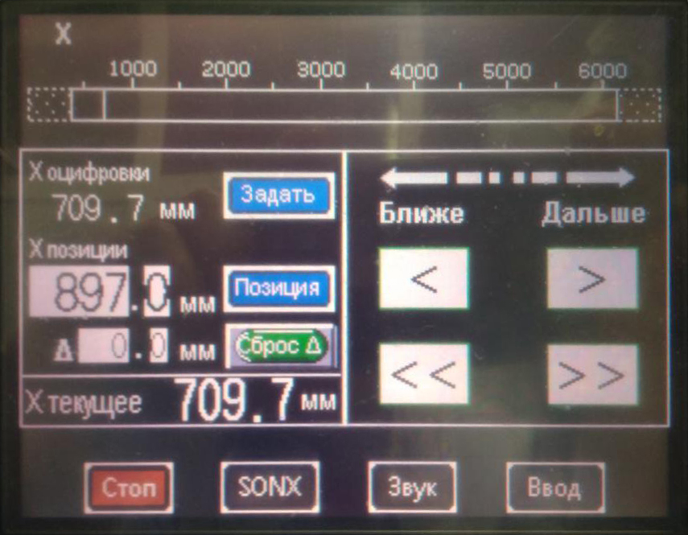
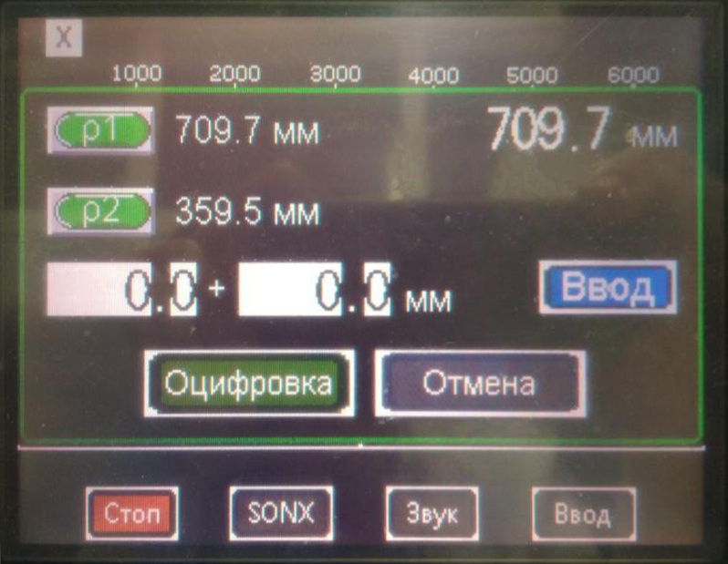
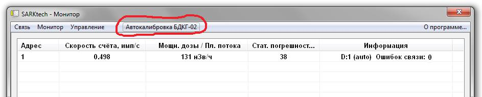
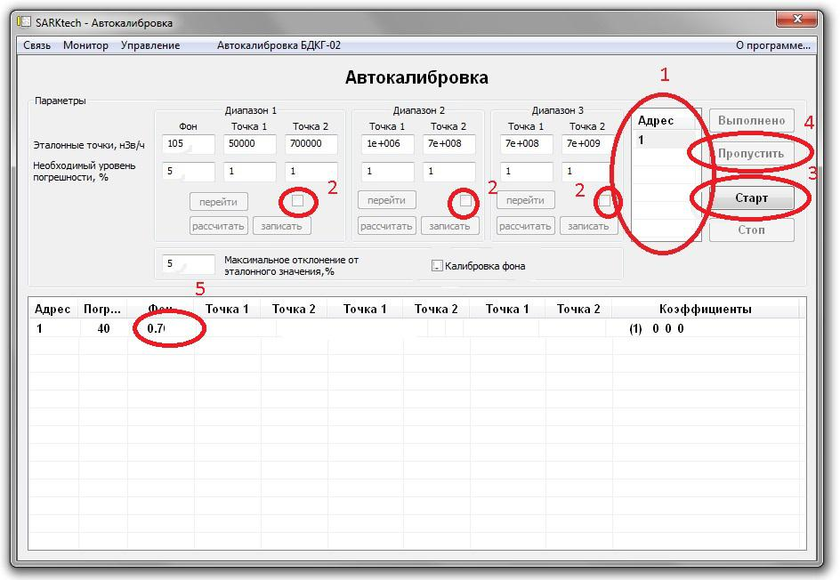
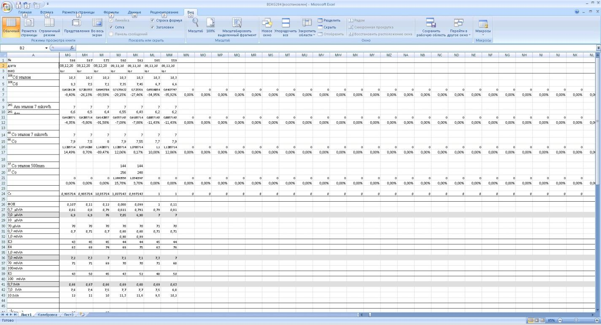
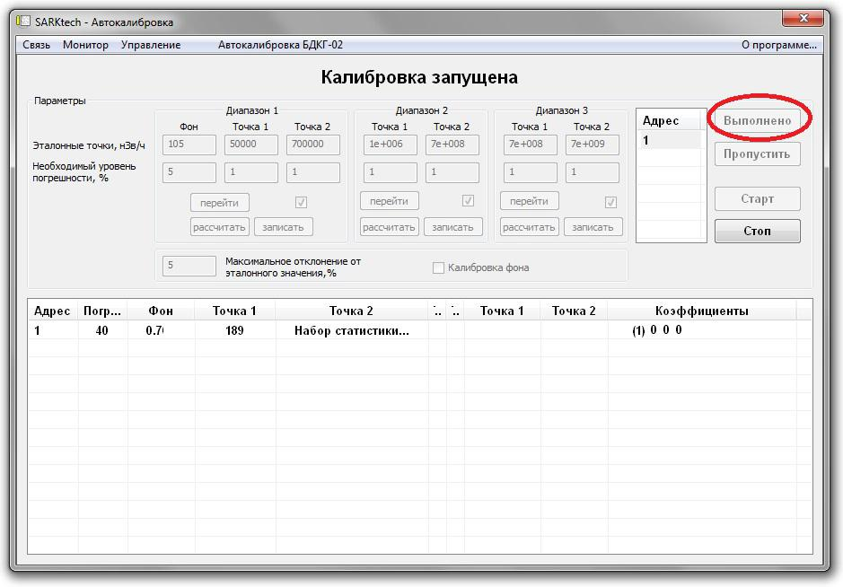
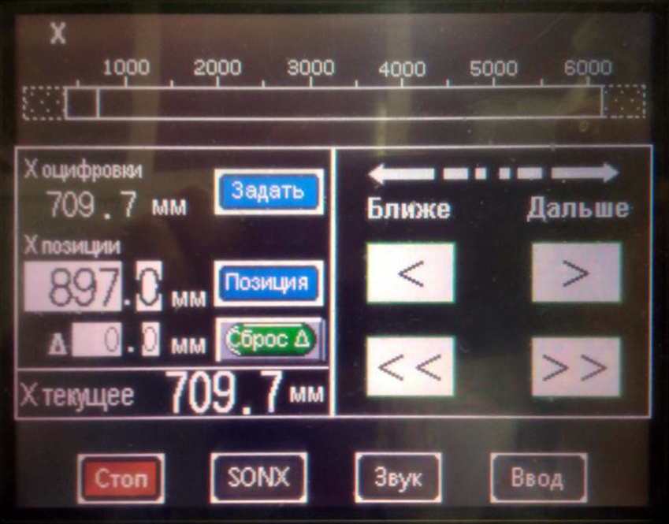
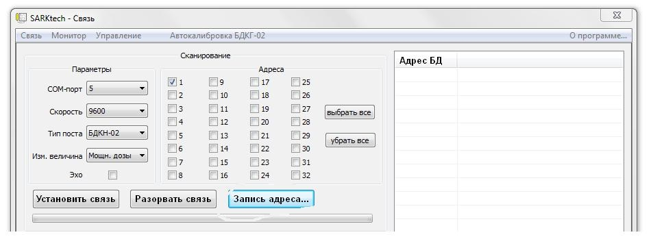
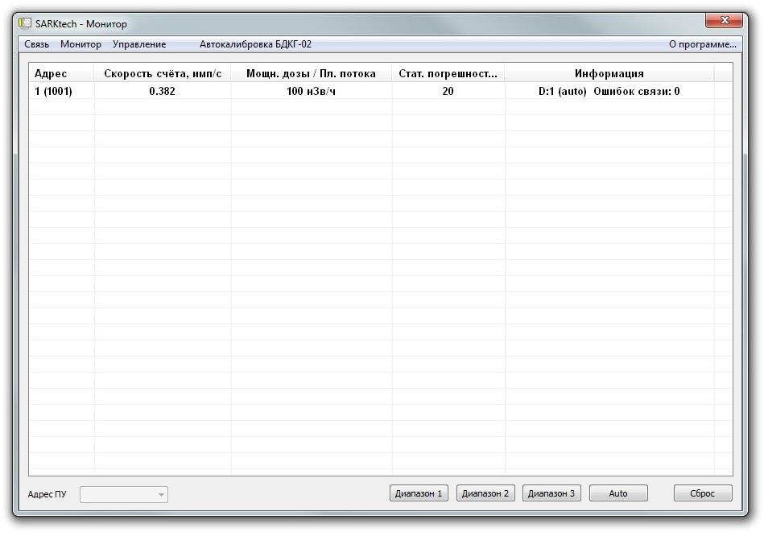

Градуировка БДКГ-02
ЛИНЕЙНОСТЬ
- Установить 3-и блока детектирования на УДГ-АТ130 таким образом, чтобы они расположились перпендикулярно оси излучения ось пересекала через кольцевые риски, а расстояние от источника до центра детектора было выставлено по центру блоков.
- На пульте управления КС-АТ130 нажать оцифровку в окне Х оцифровки 
- Далее нажать и 
- Подключить к ПК
- Запустить ПО SARKTECH
- Выбрать скорость подключения 9600
- Адреса и тип БД
- Нажать Поиск
- Перейти во вкладку Автокалибровка БДКГ-02 
- Выделить необходимые для градуировки БДКГ-02 в окне Адрес (1)
- Выбрать диапазоны для градуировки (2)
- Нажать Старт (3)
- Нажать Пропустить измерение фона (4)
- Записать в графу фон 0.7 (5) 
- Следуя указаниям программы установить источники 137Cs и точки в диапазона:
- 1 диап 100 мк и 2 мЗв/ч
- 2 диап 7 м 700 мЗв/ч
- 3 диап 700 м 7 Зв 10 Зв/ч
- Снять ПСИ в точках
- 70 мкЗв/ч, 700 мкЗв/ч, 7 м, 70 м, 700 мЗв/ч, 1, 2 Зв, 7 Зв и 10 Зв/ч
- Данные переписать в журнал градуировки 

После каждой точки нажимать кнопку
Выполнено

ЭНЕРГЕТИКА
- Установить 3-и блока детектирования на УДГ-АТ110 таким образом, чтобы они расположились перпендикулярно оси излучения ось пересекала через кольцевые риски, а расстояние от источника до центра детектора было выставлено по центру блоков
- На пульте управления КС-АТ110 нажать оцифровку в окне Х оцифровки 
- Далее нажать и
- Подключить к ПК
- Запустить ПО SARKTECH 
- Выбрать скорость подключения 9600
- Адреса и тип БД
- Нажать Поиск
- Перейти во вкладку Монитор 
- Установить источники 137Cs 7мкЗв/ч
- Установить 241Am — 1м, 57Co — 0,5 мкЗв/ч, 60Co — 10мк
- Данные переписать в журнал градуировки